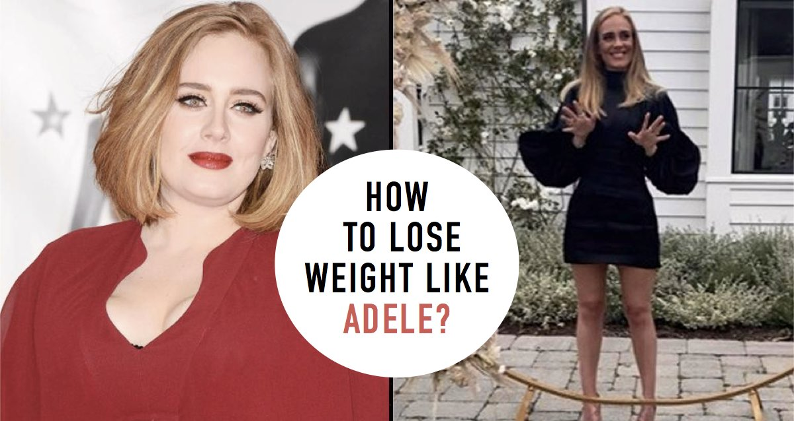

Weight Loss Boils Down to One Thing

Do you find yourself stuck in a cycle of extensive cardio and restrictive diets without seeing the desired weight loss results? The science behind shedding pounds is deceptively straightforward: it's all about achieving a caloric deficit. No cutting-edge diet trend or intense exercise regimen can bypass the fundamental laws of thermodynamics.
"Every calorie is a unit of energy," states Dr. Han Seojin, a renowned endocrinologist who has helped reshape the lives of celebrities and high-profile individuals. "Our bodies store any excess calories as fat. Therefore, the key to effective weight loss is quite simple: consume fewer calories than you expend."